Data Visualization Basics
Nick J Lyon
A Guide to Your Process
Scheduling
Learning Objectives
Practice
Supporting Information
Class Discussion
Today’s Plan
- Types of Data
- Aside: Tidy Data
- Anatomy of a Graph
- Visualization Goals
- Graph Types
Today’s Learning Objectives
After today’s session you will be able to:
- Define two major types of data
- Identify characteristics of “tidy” data
- Define fundamental anatomy of a graph
- Explain how visualization is affected by what message you want to convey
- Paraphrase how you can choose what type of graph to use
Graphing Overview
- Before you can get into graphing, you need to know:
- What type(s) of data you have
- What message you want to share with your audience
Types of Data
Continuous
- Data must be numbers
- Infinite options within possible range
- For example: height, length, profit
Categorical
- Data may be numbers
- Options limited to particular intervals
- For example: counts, satisfaction ratings
Types of Data - Comic
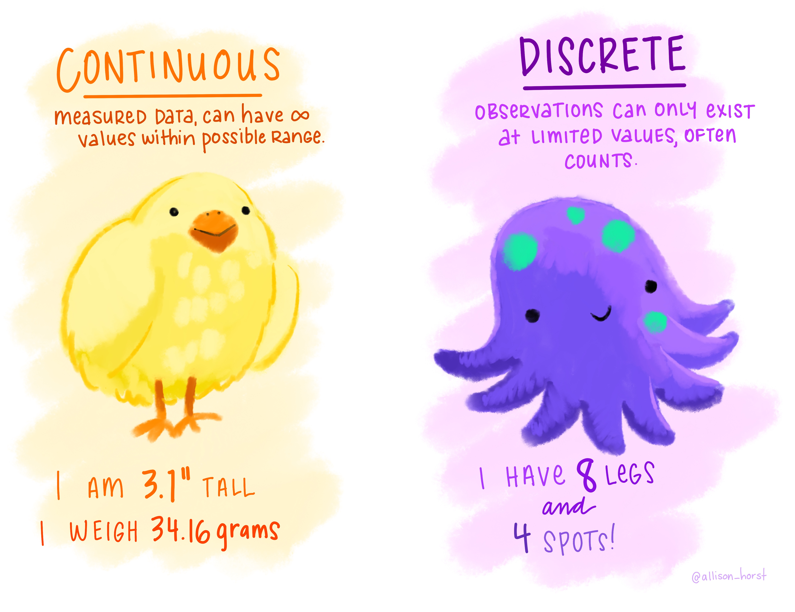
Data Format Aside
- In order to make a graph, your data need to be “tidy”
- But what does it mean for data to be “tidy”?
- Let’s dig into that
What is ‘Tidy Data’?
- One row = one observation
- One column = one variable
- One cell = one data point
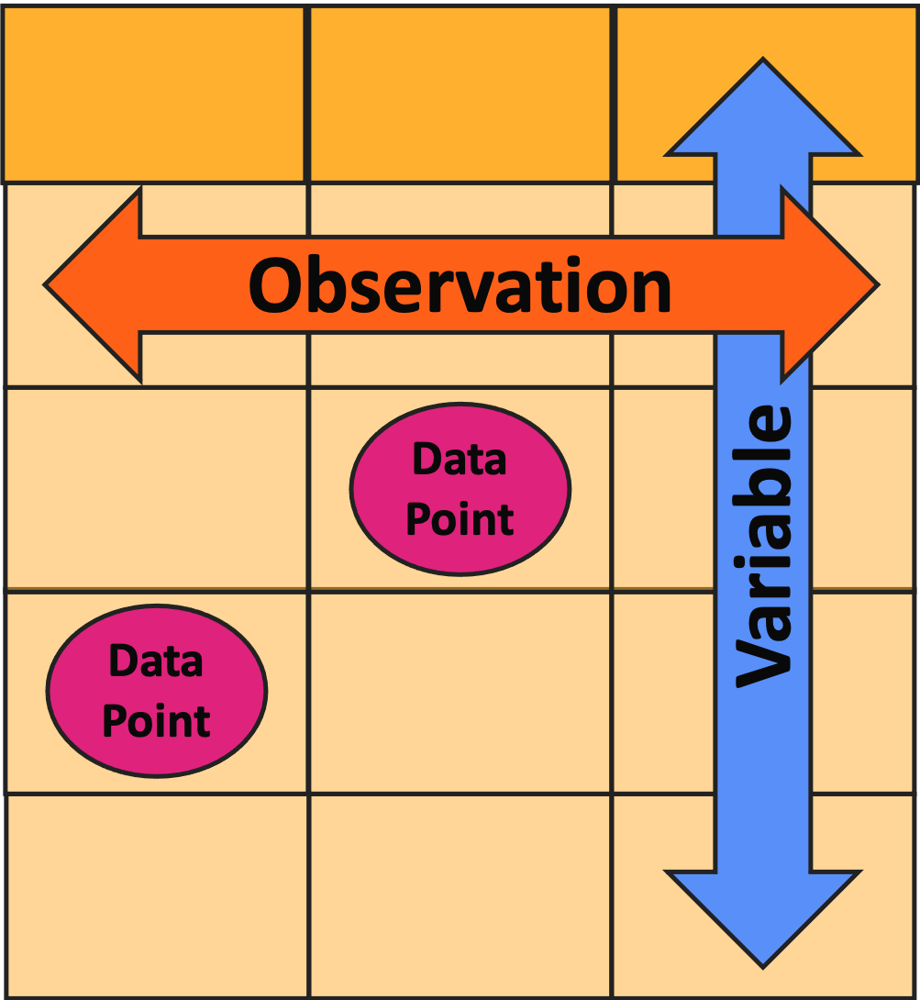
Tidy vs. Un-Tidy Comic
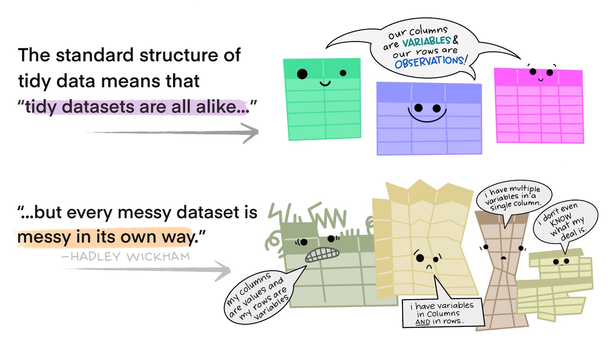
Un-Tidy Example 1
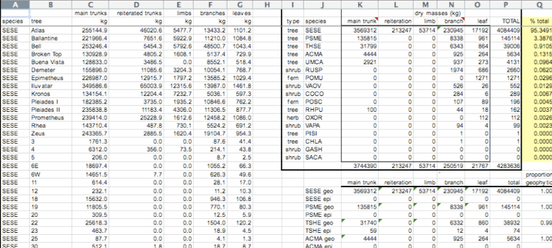
- Is every column a variable? No!
- Is every row an observation? No!
Un-Tidy Example 2

- Is every column a variable? Yep
- Is every row an observation? No!
Fixing Un-Tidy Data
- What if you realize your data are not tidy?
- Ideally, you’d use some sort of code language (e.g., R, Python) to fix the data
- This is called wrangling
- If you don’t speak code, carefully copy/pasting things is okay
- I strongly recommend making a copy that you don’t touch before doing this!
- That way you can check your work if you make a mistake
Anatomy of a Graph - P1
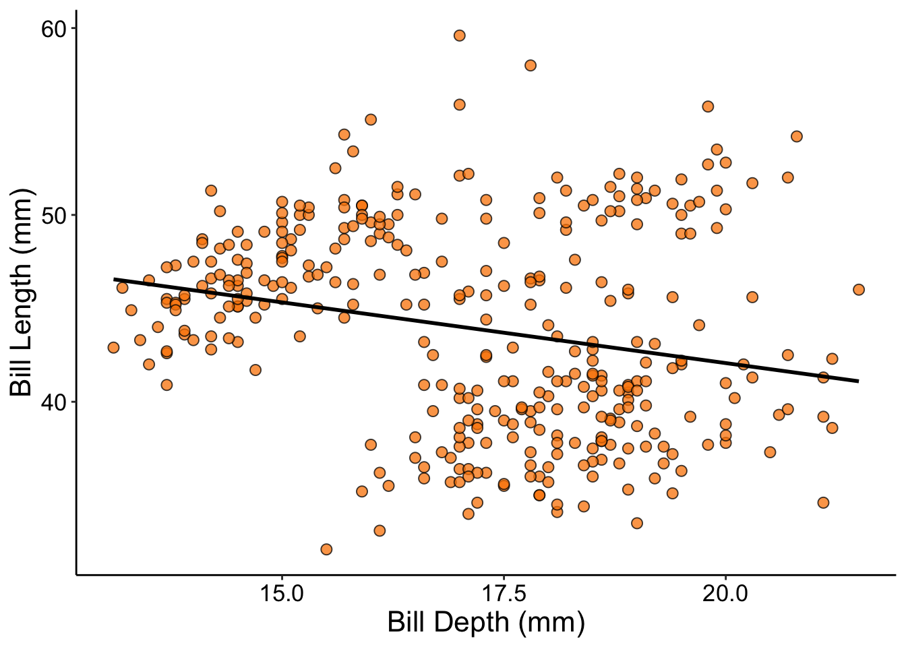
Anatomy of a Graph - P2
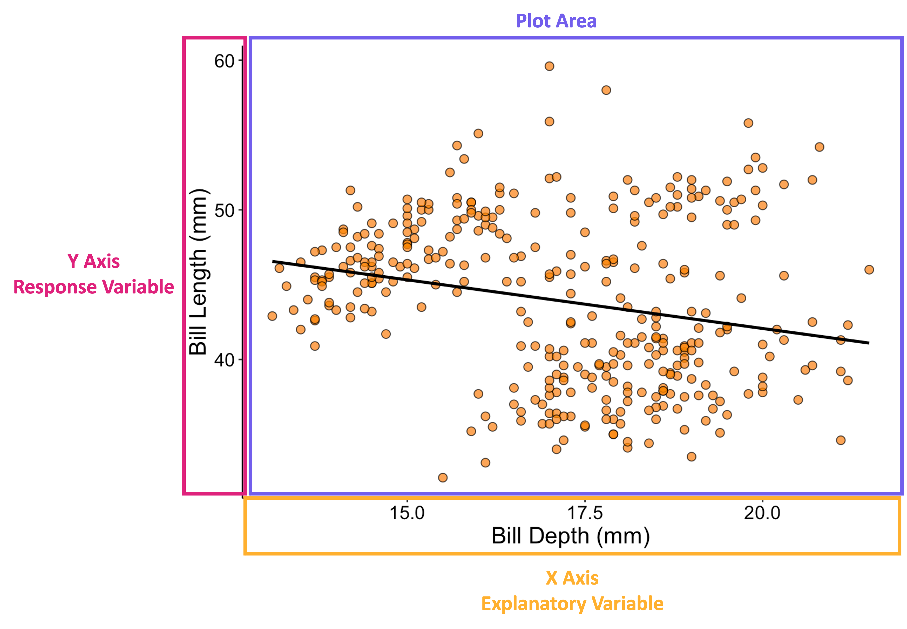
Anatomy of a Graph - P3
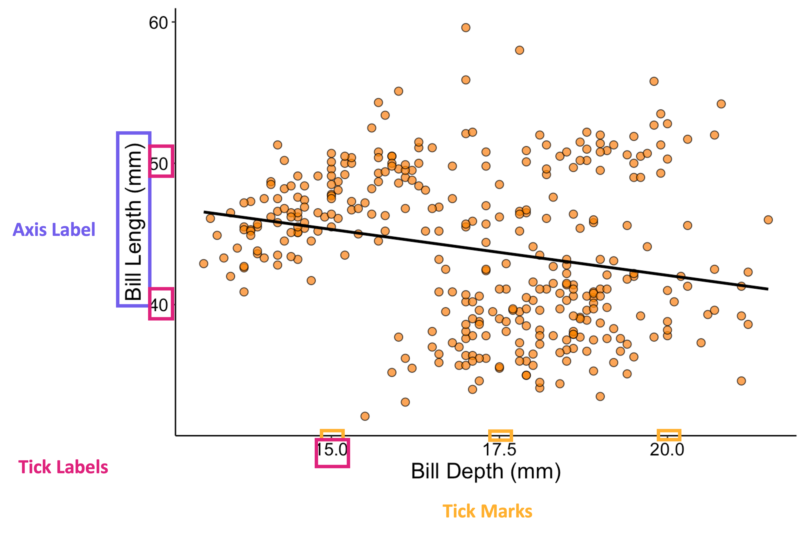
Choosing the Right Graph
- There are a lot of different types of graphs you can make
- As you work more with data, you will hone your intuition for which is correct for a given context
- For now, let’s consider a simplified ‘roadmap’ to help you as you start your data visualization journey!
Graph Choice Roadmap
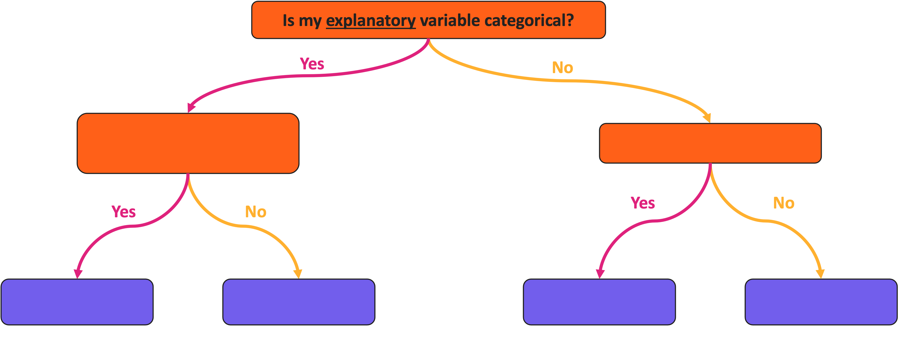
Graph Choice Roadmap
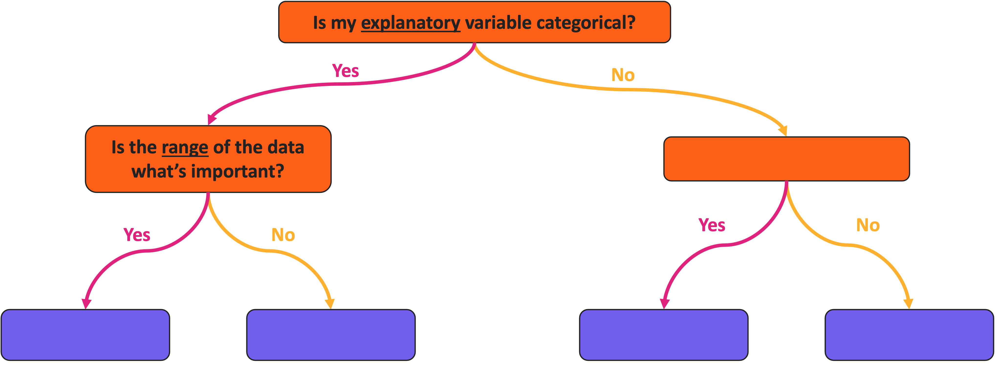
Graph Choice Roadmap
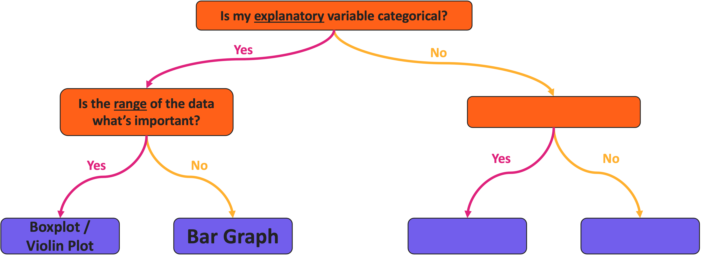
Graph Choice Roadmap
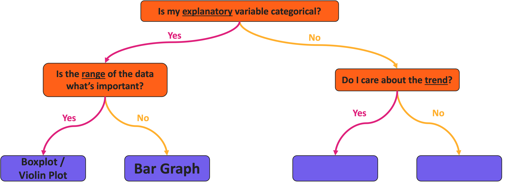
Graph Choice Roadmap

Aside: Categorical Response Variable
- You may notice that the prior slide excluded the possibility of a categorical response
- If both your explanatory and response are categorical, you likely will want a table instead of a graph
- Or something that is technically a scatterplot but has relatively few points
Graph Explanation: Scatterplot
Scatterplot Example
Graph Explanation: Violin Plot
Violin Plot Example
Violin Plot vs. Boxplot
- Why use one versus the other?
Graph Explanation: Bar Graph
Bar Graph Example
Pop-Quiz: Graph Choices!
- Let’s run through some examples!
- Raise your hand if you think you know the proper graph type to use in each of the following examples